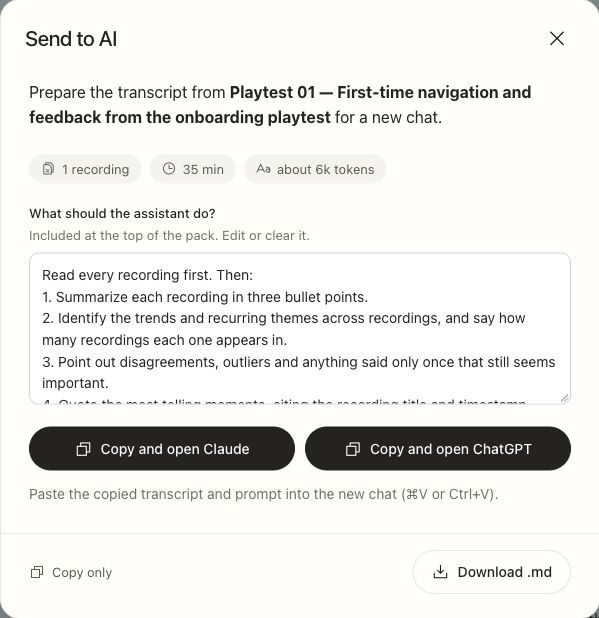

Real transcription
A 90-second live upload returned two speaker labels. Clicking a line played the corresponding audio.
Record · Review · Bring it into AI
A transcription website for recorded classes, critiques, and meetings.
Check what was said, then bring it to the AI chat where you work.

The idea
I record classes and design discussions so I can return to the exact feedback. When I ask AI to help with the next step, I want it to understand the conversation too.
That means finding the relevant passage, checking the transcript, and moving it into a chat. Duowen brings those steps together.
For students and designers who record discussions and already work with AI.
User journey
The work continues between capturing a conversation and using it to make a design decision.
| Stage | Capture | Transcribe | Review | Work with AI |
|---|---|---|---|---|
| What I do | Save the class or meeting | Upload the audio or video | Find the exact feedback | Ask what to do next |
| Where it gets difficult | Details outgrow my notes | Check file and plan limits | Spot errors in a long transcript | Move files and explain the context again |
| Duowen’s response | Use the recording I already have | Drop the file into one upload flow | Speaker turns, timestamps, playback, editing | Copy one recording or package a project |
Mapped from my own workflow. The review step was reinforced by in-person playtest feedback.
Competitive research
I compared the cost of importing recordings, the tools for checking the text, and the ways to carry it into another AI assistant.
| Product | Free plan | Entry paid plan | Reading & checking | Taking it to AI |
|---|---|---|---|---|
| Otter ↗ | 300 min/month 30 min per conversation 3 lifetime file imports | $8.33 Pro | Speaker labels, editable text, synchronized playback | TXT export on Free; AI connector available |
| Notta ↗ | 120 min/month First 3 min per conversation 50 uploads/month | $8.17 Pro | Speaker blocks, timestamps, editing, click-to-play | Exports on Pro; AI connector available |
| Fireflies ↗ | Limited upload credits Downloads require a paid plan | $10 Pro | Speaker editing, transcript/audio sync, search, bookmarks | Paid Markdown export; AI connector available |
The earlier research covered eight products and 100 sampled US App Store reviews. This comparison uses published plans and documented workflows. Readability has not been ranked through a same-task usability test.
What I learned from playtesting
I gave people transcript files to try in person. Before sending them to AI, they wanted to see who said what and when, and spot anything that looked wrong.
The product
The handoff uses your clipboard. You choose what to paste.

Recording titles, speakers, and timestamps stay with the text.

Built and tested
A 90-second live upload returned two speaker labels. Clicking a line played the corresponding audio.
Markdown download and prompt copying worked. Ten synthetic transcripts stayed in order in a combined export.
Next, test a full class and see which word and speaker errors people find and correct.
Behind the product
Finding a speech tool, debugging it, connecting the backend, and refining the interface with Claude and Codex.
Explore the project
Open the live app with your own recording, or use the timed decks for a guided walkthrough.